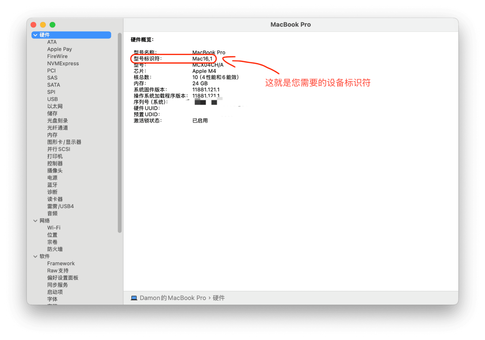
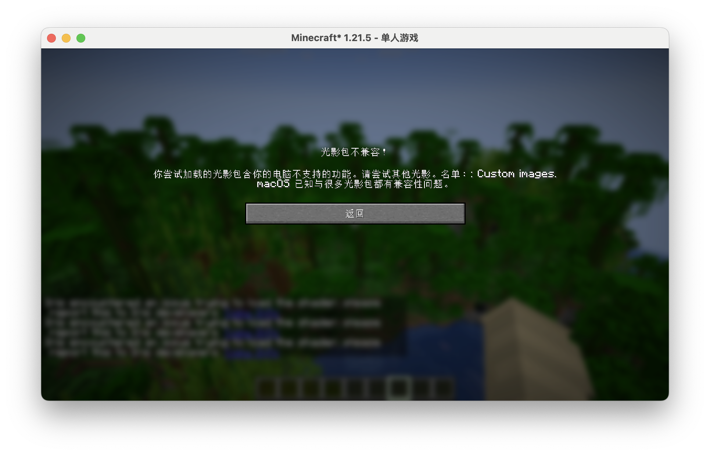
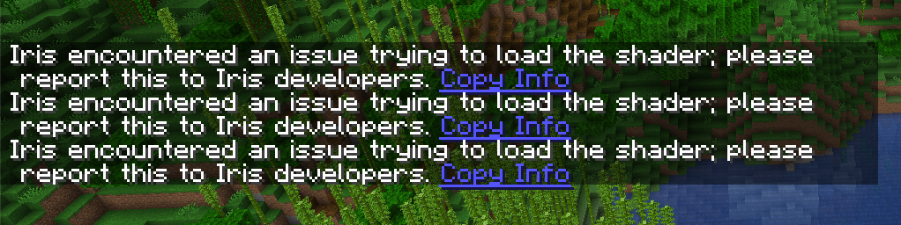
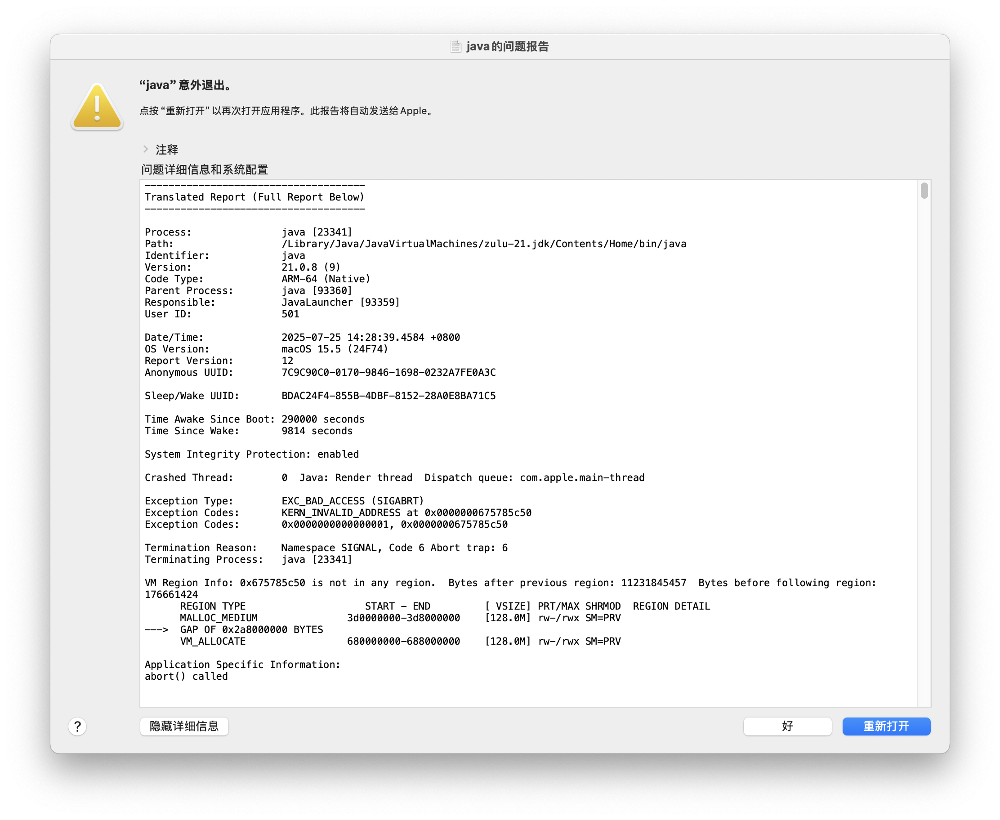
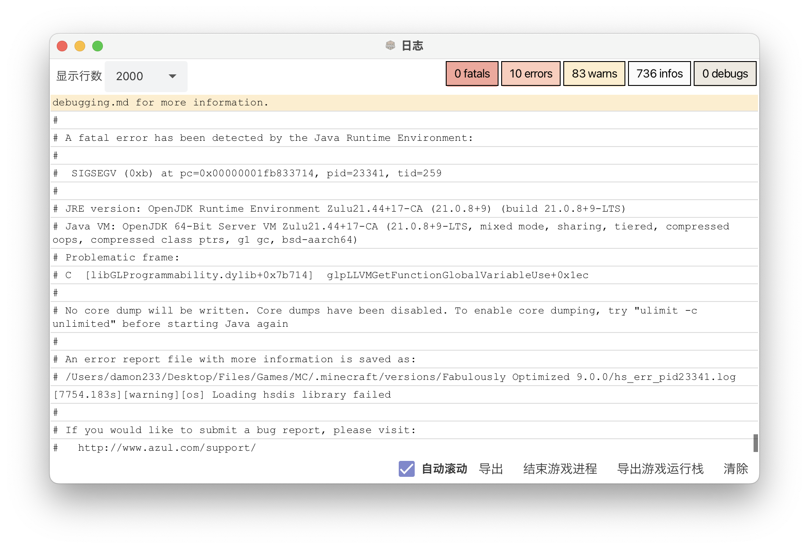

贡献
我不太相信一个普通消费者手里有所有 Apple Silicon Mac......
如果你可以为本文档添砖加瓦 (例如提供您拥有的设备光影支持情况, 修正错误等), 那万分感谢!
贡献指南
警告
为了防止部分非 Apple Silicon Mac 用户或其他不怀好意的人破坏本仓库, 请务必遵守本指南, 否则您的测试数据不会被接受!
测试
准备工作
- macOS: 最新可用版本
- Java: 优先使用 Zulu JDK 21 ARM64
- 启动器: 任意, 推荐 HMCL 或 Prism Launcher
- Minecraft: 请优先分它 6GB 的运行内存 (8GB 用户可以分 4GB)
- 使用 Fabulously Optimized 整合包或只安装 OptiFine, 材质包光影请使用原版
- 请确保游戏不是运行在 Rosetta 2 下 (既保证运行游戏的 Java 与有关依赖都是 ARM64 体系架构, 您可以在 "活动监视器" 中查看进程 CPU 种类是否为 "Apple") !
您需要一台拥有 Apple Silicon 的 Mac 电脑, 同时您最好知道您的设备标识符以便于您正确添加信息
设备标识符可以在 "系统信息" 的应用中查看......

测试流程
- 将您将要测试的光影移至
shaderpacks文件夹 - 在游戏中启用光影
- 按以下标准填入测试数据......
- 如果光影成功运行, 无明显故障也无报错, 状态用 "✅" 表示
- 如果光影成功运行但有明显故障, 或者有报错信息, 状态用 "🟠" 表示
- 如果光影没有加载, 或者导致游戏崩溃, 状态用 "❌" 表示
所有测试均需要在列表内提供光影名称、光影版本、游戏版本
报错信息阅读
以下内容均以 Iris 为例
部分光影可能会使用 macOS 不支持的特性, 例如 Custom images 等, Iris 会直接为您提供警告信息,
例如下图......

将其中的关键信息填入错误关键内容即可

Iris 和 OptiFine 都会在出错时聊天栏中提供一些报错信息以供参考, 例如......
deferred.vsh: deferred.vsh: ERROR: 0:1: '' : version '450' is not supported
ERROR: 0:1: '' : syntax error: #version
ERROR: 0:2: '' : #version required and missing.
prepare.vsh: prepare.vsh: ERROR: 0:1: '' : version '450' is not supported
ERROR: 0:1: '' : syntax error: #version
ERROR: 0:2: '' : #version required and missing.
这些儿都是 OpenGL 版本过高不支持导致的, 以上两个报错信息光影使用的 OpenGL 版本均为 4.5
还有些光影使用了不支持的特性，例如......
final.fsh: final.fsh: ERROR: 0:3: '' : extension 'GL_ARB_shader_texture_lod' is not supported
表示该光影中拓展 GL_ARB_shader_texture_lod 不被支持
另外还有光影会烦会类似于这样的信息......
Shader compilation failed for compute prepare!
这类光影建议换一个光影加载器试试
还有小部分光影会返回这样的错误......
No more available texture units while activating sampler shadowtex1
No more available texture units while activating sampler shadowcolor0
这一类直接作为错误关键填入即可
如果您真无法理解其中的意思，可以考虑使用 AI 工具帮助您解析
一般可以直接认为是 "GL 导致的 Java 崩溃"
如果需要继续测试, 请修改崩溃光影文件名称或手动更改配置以防无法进入游戏


编辑 & 上传
注意
本文档托管于 GitHub, 请先注册一个 GitHub 账号
所有内容都必须按照 Mkdocs Markdown 语法进行编辑
警告
提交的 Issue 与 PR 请务必按照模板要求填入有关信息, 例如证明图片 (可以直接拖入编辑框内), 否则您的请求会直接被拒绝!
编辑
防混淆须知
请务使用 main 分支进行贡献, 任何直接提交到 gh-pages 分支的 PR 不会被合并!
请先在终端定位到存放目录后执行......
git clone https://github.com/WhatDamon/AppleSilicon-MCShaders
没有 Git?
您可以通过 Homebrew 安装, 执行以下命令......
brew install git
您还可以通过 Xcode、MacPorts 或者直接从官网下载安装包来进行安装
如果您需要在本地预览, 如果您尚未部署环境, 可以在定位到项目根目录后用终端执行：
python3 -m venv venv # 创建虚拟环境
source venv/bin/activate # 激活虚拟环境
pip3 install mkdocs-material # 安装依赖
mkdocs serve # 启动本地运行
没有 Python?
您可以通过 Homebrew 安装, 执行以下命令......
brew install python
您还可以通过 MacPorts、pyenv 或者直接从官网下载安装包来进行安装
如果直接使用官方安装包, 如果你能接受依赖混乱, 也可以不创建虚拟环境直接安装
现在您可以访问 127.0.0.1:8000 查看效果了 (端口不一定 100% 为 8000)
剩下的您可以阅读此文章了解更多!
上传
上传前, 我们会需要一些信息来确保您提交的信息是真实可信的, 如下照片......

要求图片包含以下内容
- 物理机照片
- "关于本机" 窗口
- 您编辑的内容
- 正在运行测试光影的 Minecraft (打开 F3 界面, Mac 键盘同时按下 fn + F3 )
注意
除了您的设备序列号以及一些隐私信息外，其他内容必须保持清晰!
每一次提交都需要重新拍摄!
请将该图片按照 Issue 或者 PR 模板填入即可
完成
现在只要安静等待即可, 维护者会进行 Review 的!